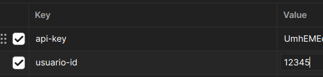

Todos los endpoint de la API necesitan autenticación para poder ejecutarlos, para ello necesita primero ingresar un usuario válido en el endpoint Login del módulo Auth, este módulo verificará que el usuario que ingrese este activo, le regresará un JSON con la siguiente información:
{
"usuario_id: 12345,
"api_key": "apiKeyCode"
}
Estas credenciales serán válidas por una hora, pasado ese tiempo tendrá que generar un nuevo login.
En cada petición tendrá que incluir los siguientes headers:

En la documentación de OpenAPI verá que estos dos parámetros se repetirán mucho, pues son necesarios para poder acceder a los endpoints de la API.